Jedno MQTT téma, dva ukazatele a dva grafy
Na pokojovém panelu chci vidět aktuální teplotu a vlhkost a pod nimi průběh za poslední půlhodinu. Čidlo posílá obě čísla v jedné zprávě. V ARAAMA k tomu stačí dva tagy. Každý čte vlastní pole JSON, má vlastní jednotku a ukládá vlastní historii.
Připojení · Teplota · Vlhkost · Kontrola čtyř karet
1. Připojení tabletu k brokeru
Připravte si ARAAMA 0.1.10 na Androidu, počítač s Pythonem 3 a klientem Mosquitto mosquitto_pub a MQTT broker dostupný z obou zařízení. Pro tento pokus dodá hodnoty generátor. Stáhnout generátor a panel RoomAir · Zapojení ESP32 a DHT22
Pokud chcete otevřít hotový panel, v Nastavení → Projekty nejprve exportujte svůj otevřený projekt. Poté z rozbaleného archivu otevřete RoomAir/panel.json. Obsahuje všechny čtyři karty. Pro ruční sestavení začněte na prázdné obrazovce cvičného projektu.
Otevřete Nastavení → Síť. V hotovém projektu vyberte Workshop broker, při ručním nastavení zvolte + Připojení a pojmenujte ho Workshop broker. Protokol je MQTT 3.1.1. Místo broker.example zadejte adresu vlastního brokeru bez mqtt://. V ukázce používáme port 1883 a vypnuté TLS. Pro svůj broker nastavte jeho port, TLS a přihlašovací údaje. V ukázce je opakování připojení 5 s, Keepalive 30 s a časový limit 5000 ms. Zvolte Uložit připojení.
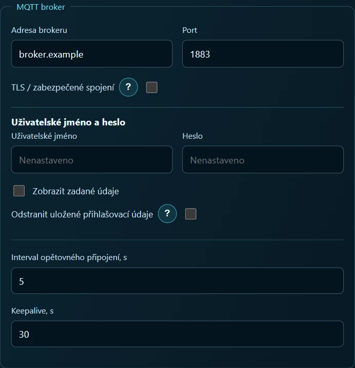
Rozbalte archiv a ve složce se souborem simulate.py spusťte příkaz níže. Ukázkovou IP adresu nahraďte adresou stejného brokeru jako na tabletu. Bez parametru --host generátor pouze vypisuje zprávy v terminálu.
python simulate.py room --host 192.168.1.20 --port 1883
Každých pět sekund přijde zpráva do tématu lab/room-air/state. V nastavení otevřete vyhledávání MQTT, vyberte Workshop broker, režim běžných témat a filtr lab/room-air/#. Spusťte hledání a rozbalte větev lab → room-air → state. Uvidíte číselná pole temperature_c a humidity_pct. Znak # patří do vyhledávacího filtru. V obou tazích použijte celou adresu tématu.
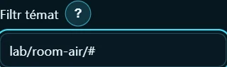
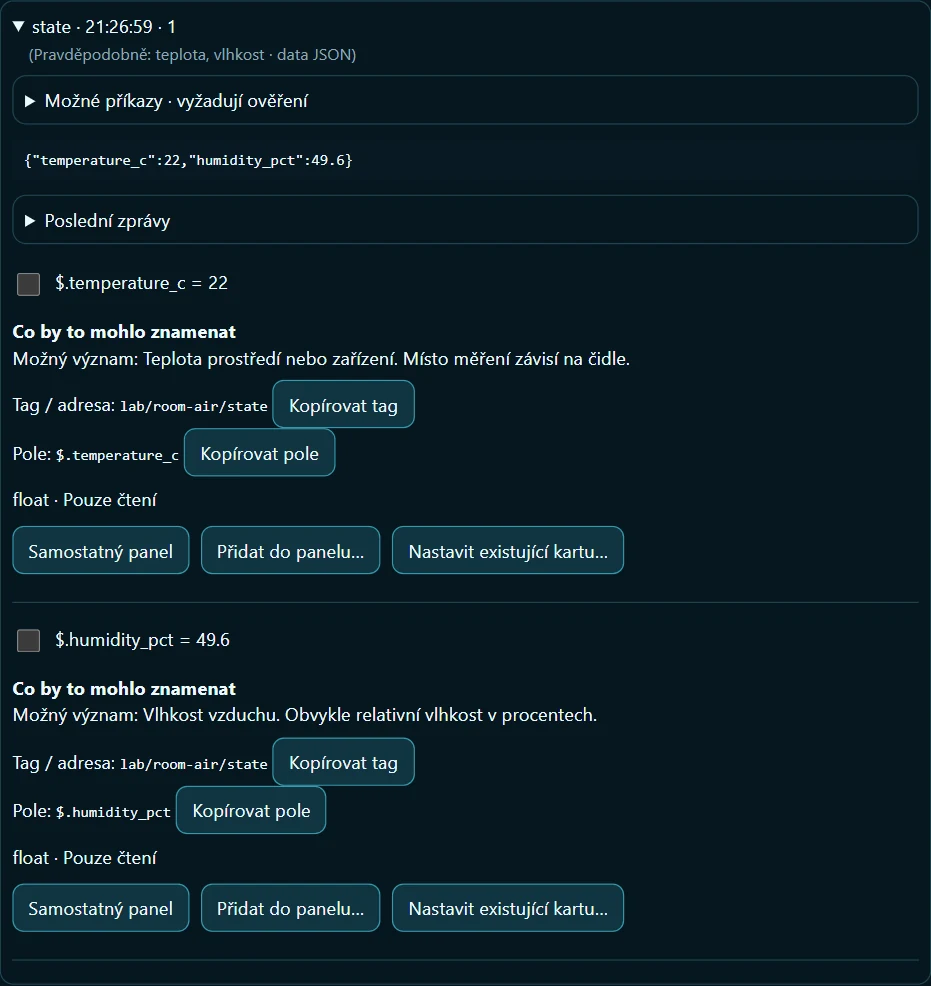
V podrobnostech nalezeného pole můžete zkopírovat jeho cestu JSON a vložit ji do formuláře tagu. Hodí se to zvláště u delších cest ze skutečných čidel. Anglické názvy tagů v návodu odpovídají souboru RoomAir.
2. Teplota vzduchu
Tag. Otevřete Nastavení → Tagy → + Tag. Jako název zadejte Air temperature, připojení Workshop broker, typ proměnné Float, přístup pouze pro čtení a jednotku °C. V části pro příjem dat zadejte téma lab/room-air/state, formát JSON a cestu $.temperature_c. Hodnota už je ve stupních Celsia. Nastavte násobek 1, posun 0 a zastarání dat 30 s. Stiskněte Uložit tag.
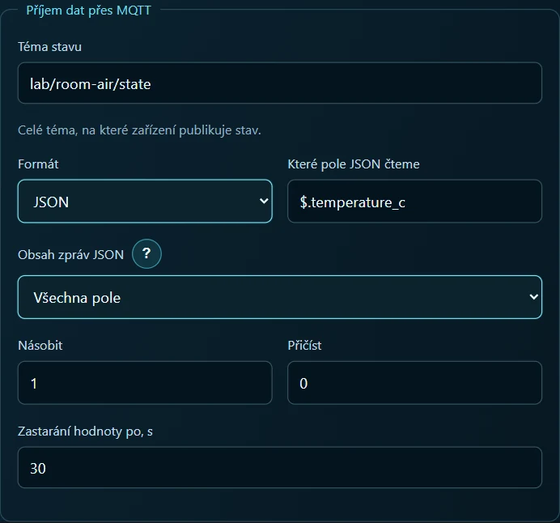
Karta 1 — ukazatel teploty. U uloženého tagu otevřete Použití na obrazovkách. Vyberte Analogový přístroj a stiskněte Vytvořit kartu tohoto tagu. V parametrech nové karty ponechte název Air temperature. V nastavení stupnice zadejte Min 0, Max 40, jednotku °C a 1 desetinné místo. Pokud se zobrazí tlačítko pro použití Min/Max, potvrďte rozsah. Při přijetí hodnoty 22 ukáže přístroj 22 °C.
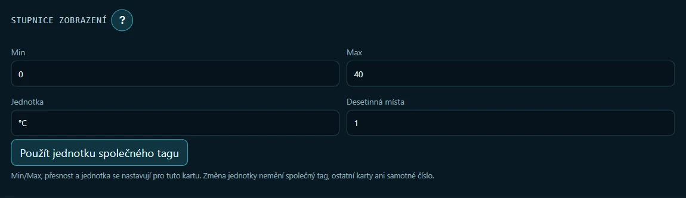
Pro vzhled podle hotového panelu vyberte v parametrech přístroje motiv obrazovky Neon, azurovou barvu karty a ciferník Oblouk s přechodem. Motiv platí pro celou obrazovku, barva a ciferník pro tuto kartu.
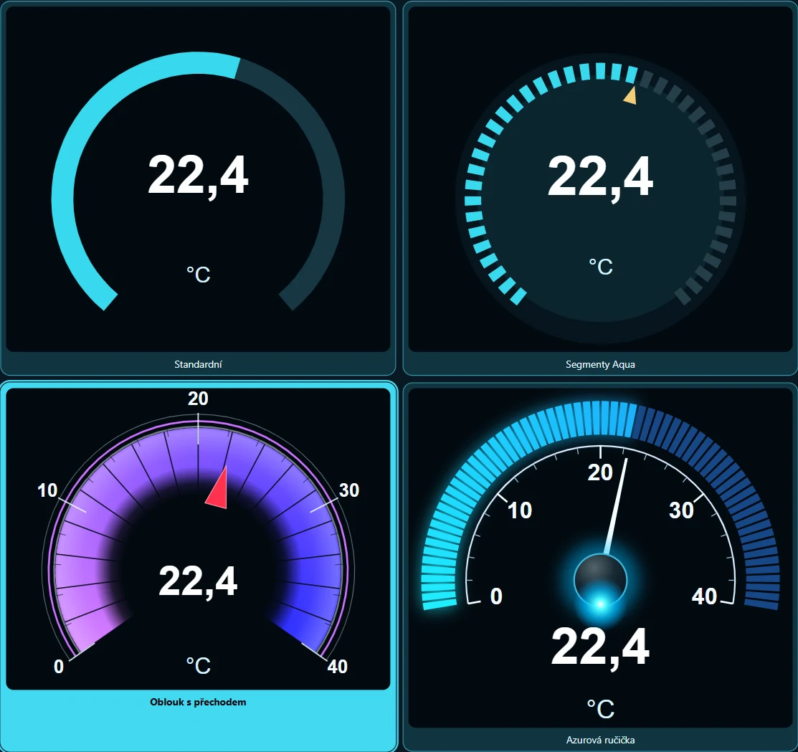
Karta 2 — graf teploty. Vraťte se do Tagy → Air temperature → Použití na obrazovkách. Vyberte Trend → Vytvořit kartu tohoto tagu. V parametrech karty zadejte název Air temperature history. Otevřete Období a záznam, zvolte vlastní období a zadejte 0,5 hodiny (30 minut). Vyberte záznam Při změně, zapněte uchování mezi spuštěními Androidu a nastavení uložte.

Historie teploty. V Tagy → Historie měření vyberte nahoře Air temperature. Zapněte záznam historie, zvolte Při změně, dobu 24 hodin a nejvýše 500 bodů. Nastavení uložte. Limity platí pro historii tagu v relaci. Časový výřez půl hodiny náleží jednotlivému grafu.
3. Relativní vlhkost
Tag. Zvolte Nastavení → Tagy → + Tag. Název je Relative humidity, připojení Workshop broker, typ Float, přístup pouze pro čtení a jednotka %. Zadejte téma lab/room-air/state, formát JSON a cestu $.humidity_pct. Generátor posílá vlhkost přímo v procentech. Zpráva s hodnotou 49,6 má na kartě zobrazit 49,6 %. Ponechte násobek 1, posun 0, zastarání 30 s a stiskněte Uložit tag.
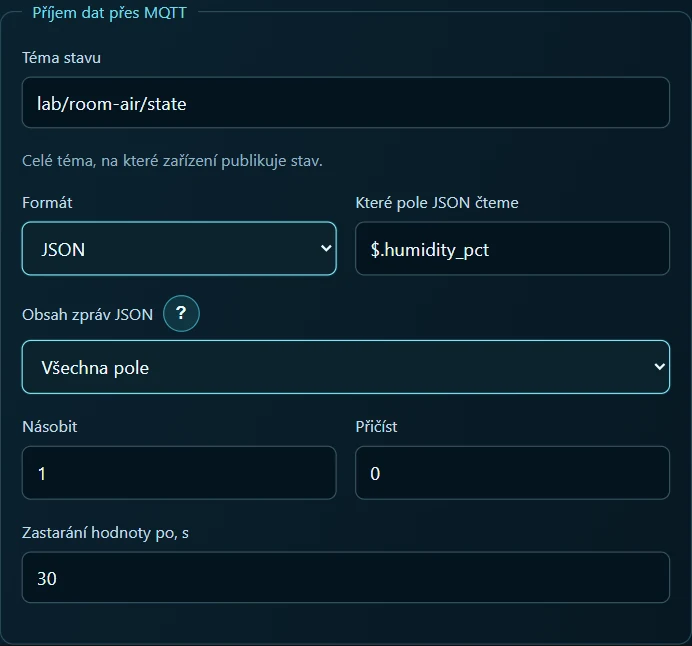
Karta 3 — ukazatel vlhkosti. U tagu Relative humidity otevřete Použití na obrazovkách. Vyberte Analogový přístroj → Vytvořit kartu tohoto tagu. V parametrech karty ponechte název Relative humidity. Nastavte stupnici na Min 0, Max 100, jednotku % a 1 desetinné místo. Pokud aplikace nabídne použití Min/Max, rozsah potvrďte. Při vlhkosti kolem 50 % se ručička dostane doprostřed stupnice.

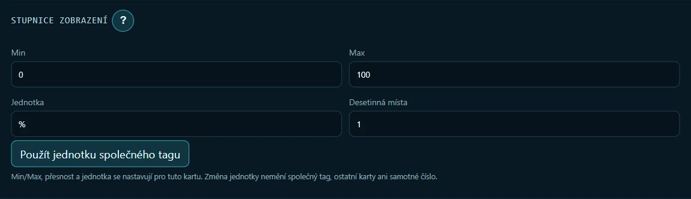
U karty vlhkosti vyberte zelenou barvu a ciferník Azurová ručička. Na hotové obrazovce zabírá teplota levou polovinu horní řady a vlhkost pravou. V režimu nastavení přetáhněte karty na místo a tažením za dolní roh upravte jejich velikost. Pod ukazatele umístěte přes celou šířku graf teploty a pod něj graf vlhkosti.
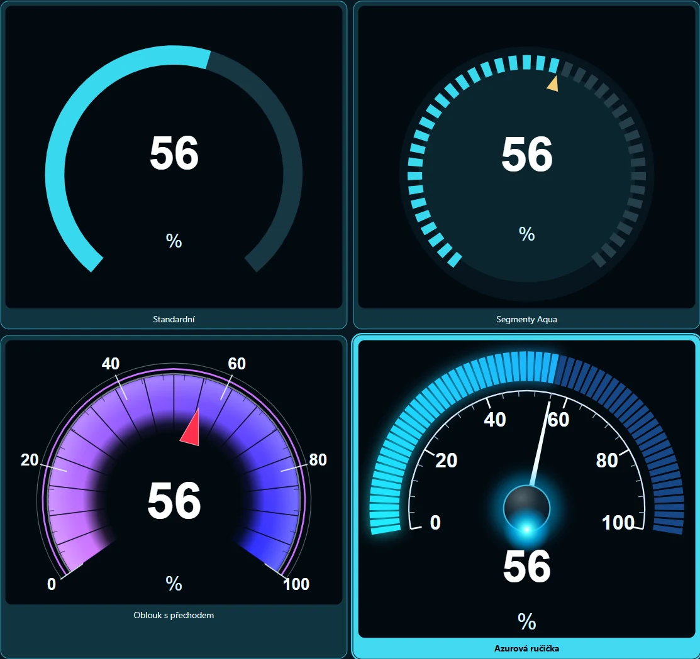
Karta 4 — graf vlhkosti. Vraťte se do Tagy → Relative humidity → Použití na obrazovkách. Vyberte Trend a stiskněte Vytvořit kartu tohoto tagu. Graf pojmenujte Relative humidity history. V jeho parametrech otevřete Období a záznam, zvolte vlastní období 0,5 hodiny, záznam Při změně, zapněte uchování mezi spuštěními Androidu a uložte.
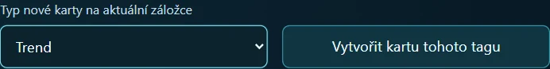
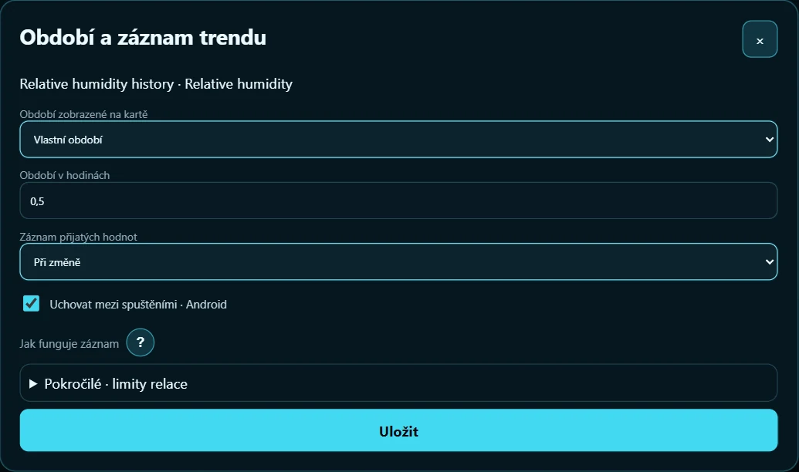
Historie vlhkosti. V Tagy → Historie měření vyberte Relative humidity. Zapněte záznam, zvolte Při změně, dobu 24 hodin a nejvýše 500 bodů. Nastavení uložte. Změna vlhkosti se teď zaznamená i při stejné teplotě.
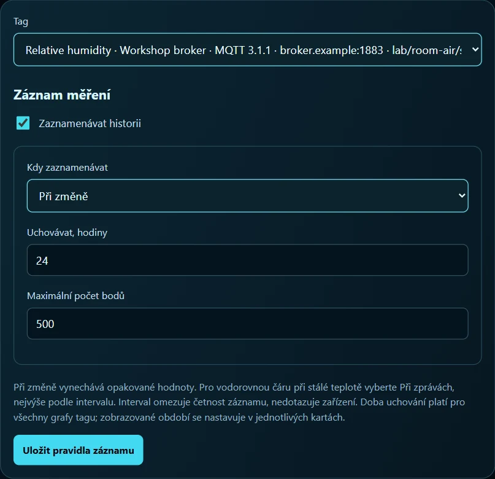
4. Kontrola všech čtyř karet
Spusťte panel. Porovnejte první dvě zprávy generátoru s ukazateli a počtem bodů v nové relaci.
| Čas od spuštění | Teplota | Vlhkost | Počet bodů teploty / vlhkosti |
|---|---|---|---|
| 0 s | 22,0 °C | 49,6 % | 1 / 1 |
| 5 s | 22,0 °C | 49,4 % | 1 / 2 |
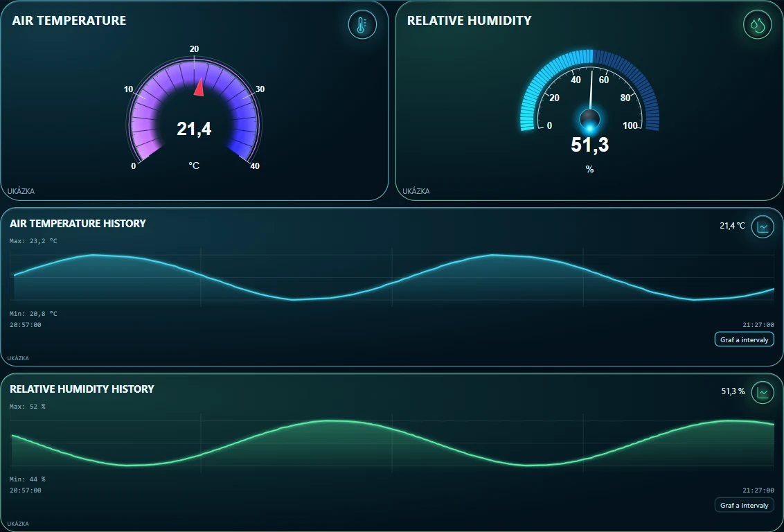
Při pořizování snímku prošlo rozhraním ve zrychleném čase 361 zpráv generátoru. Teplotní graf zaznamenal 91 bodů, graf vlhkosti 266. Ukazují obě stupnice 22? Zkontrolujte cestu JSON v tagu Relative humidity. Mění se vlhkost na stupnici, ale graf je prázdný? Zkontrolujte tag přiřazený grafu a záznam historie u Relative humidity. Pokud jsou prázdné obě stupnice, najděte nejprve čerstvou zprávu ve vyhledávání MQTT.